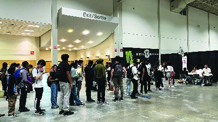

加拿大年青人找工作愈上更大困难。（明报图片）
一名从滑铁卢大学毕业的学生投递了400多份简历，等待了一年的时间仍然没有找到工作。而与此相对的是，加拿大就业市场的裁员率非常低，甚至不到1%，这形成了一个矛盾的情况。
加拿大最近的裁员数据非常低，全国平均裁员率仅0.8%，比2017年至2019年低17%，但是对于刚刚进入就业市场的新人，很多工作岗位已经消失，找工作异常困难。自2022年以来，加拿大的总体失业率呈缓慢上升趋势，从 4.9% 上升至 6.4%。但根据加拿大央行（Bank of Canada）今年7月的报告，新移民和15至24岁年轻加拿大人的失业率已从2022年的6.9%和9.3%的低点飙升至11.6%和13.5%。
比洛巴甫洛维奇（Matthew Bilopavlovic）今年24岁，去年8月毕业于滑铁卢大学，获得理学学位，辅修计算机专业。一个月后，他来到多伦多寻找数据分析师的职位。他日复一日在网上申请工作，经过了一年，递交了400多份求职信，仍然没有找到工作。
他目前兼职做家教补贴生活开支，包括每月1500元的房租。他说：「我不知道兼职工作还能支撑我多久，可能很快就得搬回咸美顿父母家中。」 他申请了一家体育博彩公司的数据分析师的工作，他的朋友也在这家公司工作，为他提供了推荐信，但是一个月后却仍然被拒。
他说：「公司的电邮说有6000人申请，需要等待一段时间。」但此后他没有接到面试通知，也没有收到公司的回覆。
32岁的乌麦（Favour Umeh）出生于尼日利亚，2021年从乌克兰移民到加拿大，他拥有经济学硕士学位。现在，他靠做共享汽车维持生计。周末和朋友一起经营一家园艺公司。他说：「这就是我现在所做的工作，以维持生计。」 他已经提交了近1000份相关工作的申请，但在半年内里只获得了两次面试机会。
根据加拿大统计局（Statistics Canada）的数据，今年6月，15岁至24岁男性的就业岗位减少了1.3万个，而自2023年4月以来，青年总体就业率下降了4.4个百分点，降至54.8%。今年6月，登陆加拿大5年或5年以内的新移民失业率达到12.6%的峰值，自1月以来上升了3.5%。
就业谘询公司「青年就业服务」的行政总裁朗格（Timothy Lang）说，大多数行业都处于「雇主市场」，这对年轻人来说历来都很艰难。朗格说：「雇主有更好的人才库可供选择。因此，他们会选择资质更好、经验更丰富的人。」随著公司削减成本，他们提供的有福利和工作保障的长期职位也愈来愈少，而兼职工作则愈来愈多。
Aaron Zhang, Local Journalism Initiative Reporter